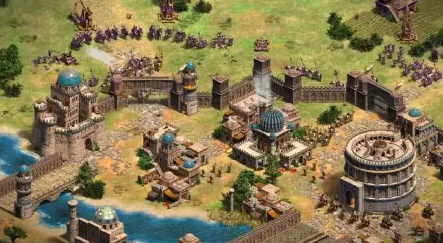

<!DOCTYPE html>
<html lang="en">
<head>
    <meta charset="UTF-8">
    <meta name="viewport" content="width=device-width, initial-scale=1.0">
    <meta name="Keywords" content="hileler,chat,Age Of empires 2,Age Of empires 4">
    <meta name="msapplication-config" content="İMG/browserconfig.xml">
    <title>Age of Empires 2 Hileleri</title>

<body>
    <style>
        body {
            font-family: Arial, sans-serif;
            margin: 0;
            padding: 0;
            background-color: #f4f4f4;
        }
        header {
            background-color: #333;
            color: #fff;
            padding: 10px 0;
            text-align: center;
        }
        nav ul {
            list-style: none;
            padding: 0;
        }
        nav ul li {
            display: inline;
            margin-right: 20px;
        }
        nav ul li a {
            color: #fff;
            text-decoration: none;
        }
        main {
            padding: 20px;
        }
        h2 {
            color: #333;
        }
        .cheat-list {
            background-color: #fff;
            padding: 20px;
            border-radius: 8px;
            box-shadow: 0 0 10px rgba(0, 0, 0, 0.1);
        }
        .cheat-list h3 {
            color: #333;
            margin-top: 0;
        }
        .cheat-list ul {
            list-style: none;
            padding: 0;
        }
        .cheat-list ul li {
            padding: 8px 0;
            border-bottom: 1px solid #ddd;
        }
        footer {
            text-align: center;
            padding: 10px;
            background-color: #333;
            color: #fff;
            position: fixed;
            bottom: 0;
            width: 100%;
        }
    </style>

    <link rel="icon" type="image/png" sizes="32x32" href="İMG/favicon-32x32.png">
    <link rel="icon" type="image/png" sizes="16x16" href="İMG/favicon-16x16.png">
    <link rel="icon" href="İMG/favicon.ico" type="image/x-icon">
    <link rel="manifest" href="İMG/site.webmanifest">
</head> 
</body>
</html>


<header>
    <h1>Age of Empires 2 Hileleri</h1>
    <nav>
        <ul>
            <li><a href="index.html">Ana Sayfa</a></li>
            <li><a href="rehberler.html">Rehberler</a></li>
            <li><a href="hileler.html">Hileler</a></li>
            <li><a href="oyunlar.html">Oyunlar</a></li>
        </ul>
    </nav>
</header>


<main>   
    <!-- Age of Empires 2 Hileleri -->
    <div class="cheat">
       <h3>Age of Empires 2: Hileler</h3>

       <p>Microsoft tarafından 1999 yılında piyasaya sürülen ve günümüzde hala severek oynanan Age Of Empires 2 strateji oyunudur.
         Orta Çağ baz alınarak geliştirilen oyunda birçok uygarlık yer alıyor. 
        Oyunda sırasıyla çağ atlayarak güçlenmek, ordu oluşturmak ve savaşa girmek amaçlanıyor. Ancak oyun içerisinde güçlenmek için temeli sağlam bir ekonomiye sahip olmak şart. Bu şartların sağlanması oldukça zor.
         Age Of Empires 2 hileleri oyunda zorlu görevleri tamamlamaya ve güçlenmeye yardımcı oluyor. Age Of Empires hileleri nasıl yapılır? 
        Age Of Empires 2 Hileleri içeriğimizden detaylıca öğrenebilirsiniz.</p>
        
        <p>Ensemble Stüdyoları tarafından geliştirilen ve 1999 yılında ilk kez piyasaya sürülen Age Of Empires gerçek zamanlı bir strateji oyunudur. 
            Bu oyunda Karanlık Çağ (Dark Age), Feodal Çağ (Feudal Age), Kaleler Çağı (Castle Age) ve İmparatorluk Çağı (Imperial Age) olmak üzere 4 çağ vardır. 
            Bu çağları sırasıyla atlayarak güçlenmek ve ordu oluşturmak gerekir. 
            Ancak oyunda ekonomik güç ve ordu elde etmek zorlayıcı olabilir.
             Bu yüzden Age Of Empires hilelerine ihtiyaç duyulur.</p>

       <h2>Age Of Empires Hileleri</h2>
       <ul>
           <li><strong>ROCK ON:</strong> 1000 taş ekler.</li>
           <li><strong>LUMBERJACK:</strong> 1000 odun ekler.</li>
           <li><strong>ROBIN HOOD:</strong> 1000 altın ekler.</li>
           <li><strong>CHEESE STEAK JIMMY'S:</strong> 1000 yemek ekler.</li>
           <li><strong>MARCO:</strong> Haritayı açar.</li>
           <li><strong>POLO:</strong> Önceden gezilmiş bölgelerde bulunan karanlık sisi kaldırmaya yarar.</li>
           <li><strong>AEGIS:</strong> Anında inşa (tüm bina ve üniteler hemen tamamlanır).</li>
           <li><strong>NATURAL WONDERS:</strong> Haritadaki tüm kontrolsüz birimlerin kontrolünü sağlar.</li>
       </ul>
       <br>
       <h2>Age Of Empires Hileleri Nereye yazılır?</h2>
       <p>Age Of Empires hileleri oyun açıkken kullanılabilir.
         Oyun sırasında
          ENTER tuşuna basın ve açılan panele istediğiniz hile kodunu yazdıktan sonra tekrar ENTER yapın.</p>
   </div>
  </main>